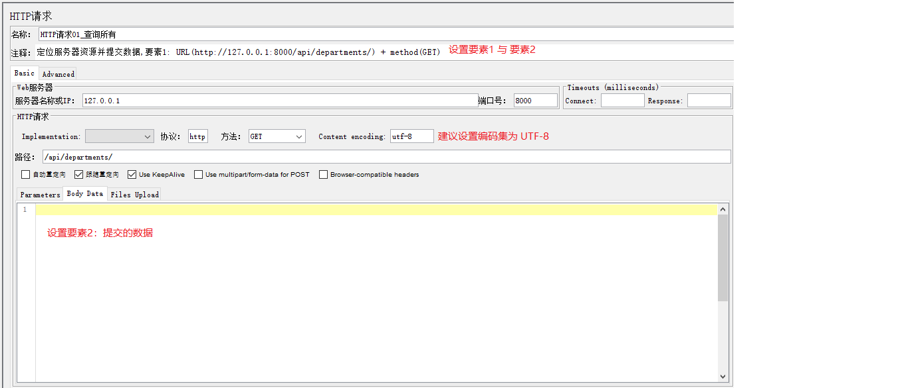
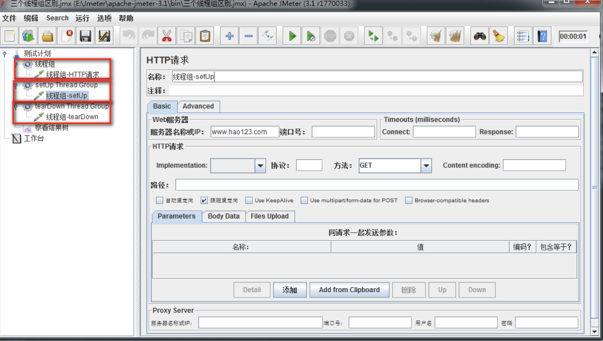
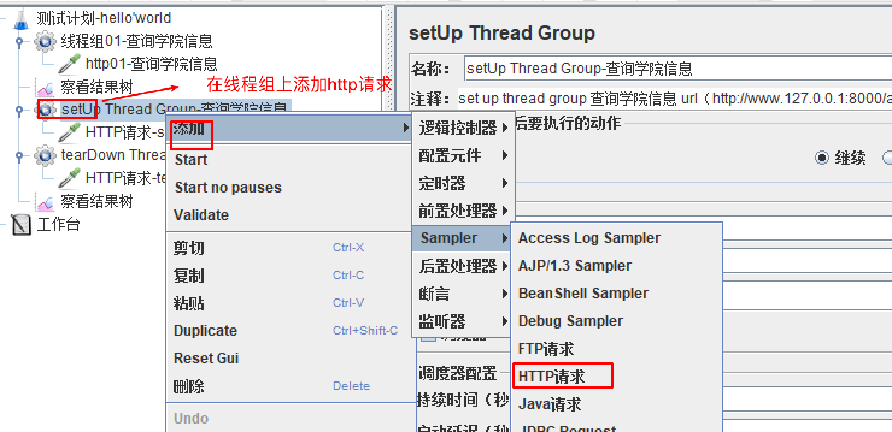
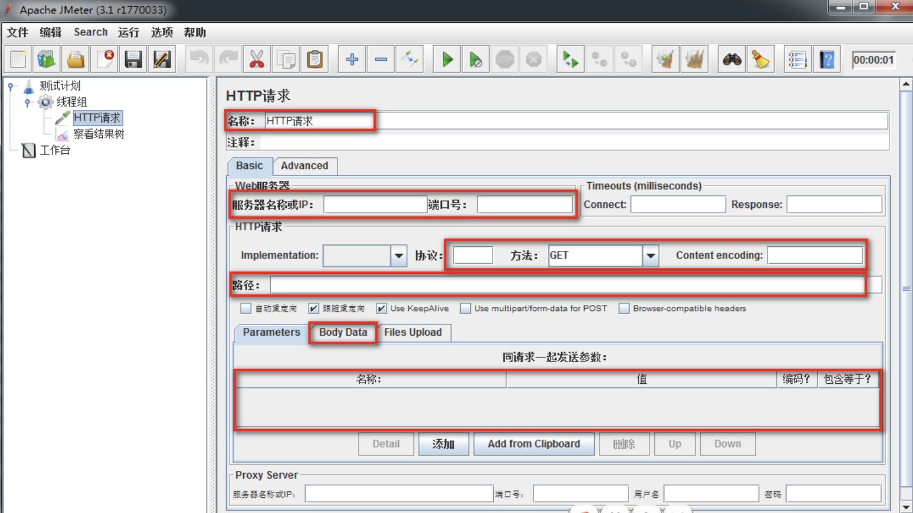

Jmeter 基本使用流程
目标
- 了解Jmeter功能界面布局
- 熟悉测试计划面板
1. 主界面布局
JMeter的主界面布局分为标题栏、菜单栏、工具栏、树形标签栏和内容栏
标题栏：主要显示计划信息及JMeter版本。
菜单栏：全部的功能的都包含在菜单栏中。
工具栏：工具栏中的按钮在菜单栏都可以找到，工具栏就相当于菜单栏常用功能的快捷按钮
树形标签栏：树形标签栏通常用来显示测试用例（计划）相关的标签。
内容栏：配合树形标签栏显示，树形标签中点击哪个标签，内容栏中就显示相应的内容和操作。

组件
概念: Jmeter中功能点称为组件
元件
概念：相同类似功能组件的集合称之为元件.
常用的八大元件:
- 逻辑控制器
- 配置元件: 包含java默认值、http请求默认值、http表头管理器等等
- 定时器(Timer): 包含同步定时器、泊松随时时间等
- 前置(预)处理器: jdbc 预处理器、html链接解析器,用户参数等
- 采样器(Sampler): 包含http请求、jdbc请求、邮件请求等
- 后置处理器: 包含jdbc后处理器、xpath抽取器、正则表达式抽取器等
- 断言
- 监听器: 包含图表结果、查看结果树、汇总报告等
2.Jmeter的基本使用流程
需求：
1. 需求对我们学院查询执行100次，如何去做？
2. 50个请求同时请求如何操作？
使用JMeter的解决方案
1. 添加【测试计划】
2. 基于添加的测试计划添加【线程组】，循环次数设置为100次
3. 在【取样器】中基于线程组添加**HTTP请求**
4. 在【监听器】基于线程组添加【察看结果树】
5. 在监听器基于线程组添加【聚合报告】
2.1 创建测试计划

在测试计划的名称栏目修改名字后,ctrl + s 保存
2.2 设置请求三要素

2.3 运行并查看结果
(1). 设置监听器和结果树

(2). 查看运行结果

3. 相关概念
3.1 TestPlan(测试计划)
在Jmeter中包含各种相互关联但为不同目的而设计的元素.
测试计划可视化为用于运行测试的JMeter脚本, 包含执行脚本的所有步骤。测试计划由测试元素组成，包括线程组，逻辑控制器，样本生成控制器，监听器，定时器，断言和配置元素等等。
每个测试计划中至少应有一个线程组。 我们可以根据要求添加或删除元素。
测试计划的作用：
1. 本次测试所需要的【组件】都是基于测试计划添加；
2. 本次测试所有组件的设置与执行都基于测试计划；
组件：完成指定功能代码段的封装；
选项(在这里我们只介绍我们会使用到的选项)
独立运行每个线程组：
进程：是每个正在运行的应用程序。 线程：按照进程的指令去执行指定的代码。 线程组（多线程）：多个线程的组合。 线程组（多线程）的执行顺序是并行的。 勾选：让本次测试计划中所有线程组保持从上到下顺序执行Add directory or jar to classpath：
加载第三方jar包；比如：测试数据库时使用，加载数据库驱动jar包。
注意事项
在运行测试计划前,一定要保存测试计划
Jmeter文件或测试计划以.jmx扩展文件形式保存.JMX是一种基于开放测试的格式,它使测试计划能够在文本编辑器中启动.
3.2 Threads(User)线程组 【重点】

1. thread group(线程组): 通常添加使用的线程组,一般一个线程组可以看作一个虚拟用户组,其中每个线程为一个虚拟用户.
2. setup thread group: 一种特殊线程组, 可用于执行预测试操作,即执行测试前进行, 一般做初始化操作.
3. teardown thread group: 一种特殊的线程组, 可用于执行后操作,即执行测试结束后执行, 一般做结尾操作.
(1)、 thread group(线程组)

作用:
1. 添加测试中使用的大多数组件
在取样器错误后要执行的动作
- 继续: 取样器执行时出现错误时,请求不会停止,继续执行
- Start Next Thread Loop: 忽略错误, 线程当前循环错误,执行下一个循环
- 停止线程: 只限当前线程停止,不影响其他线程执行
- 停止测试: 当前执行的线程全部执行完毕后结束
- Stop Test Now: 立刻停止
线程属性
- 线程数：虚拟用户数
- Ramp-Up Period(in serconds)：启动虚拟全部用户数所需要的时间
- 循环次数 ：指定次数或勾线永远
- Delay Thread creation until needed: 默认不勾选,测试开始时,所有线程被创建完.若勾选,线程会在需要合适时间进行创建.
- 调度器：勾选后，调度器配置才能使用；
调度器配置
- 持续时间（秒）：设置脚本压测持续时间
- 启动延迟（秒）：启动延迟时间
- 启动时间: 设置启动时间和启动延迟冲突.如果启动延迟设置后,启动时间被忽略.
- 结束时间: 设置脚本运行结束时间,和持续时间冲突,若有持续时间,结束时间会被忽略
提示：为了理解setup thread、teardown thread两个线程组我们结合案例理解下
(2) 案例
需求:
通过thread group、setup thread group、teardown thread group 三个线程组去访问去访问查询所有学院接口
效果图

1. 需求组件：
1. 基于测试计划添加【线程组】
2. 基于线程组添加【HTTP请求】
3. 基于测试计划添加【setup thread group】线程组
4. 基于setup thread group添加HTTP请求
5. 基于测试计划添加【teardown thread group】线程组
6. 基于teardown thread group添加HTTP请求
7. 基于测试计划添加【察看结果树】
2. 组件设置细节：
1. 测试计划勾选独立运行线程组
2. HTTP请求：服务器地址 http://127.0.0.1:8000/api/departments/
3. HTTP请求: 修改HTTP请求名称，以做区分
3. 结论
经过测试我们发现线程组的执行顺序是: setup thread group、thread group、 teardown thread group
3.3 Http请求
添加http请求

http界面

(1)、 作用:
1. 模拟前端或第三方软件向服务器发送请求;
2. 设置请求时的方法和参数数据;
(2)、 参数详解：
1. 名称：本属性用于标识一个取样器，建议使用一个有意义的名称。
2. 服务器名称或IP ：HTTP请求发送的目标服务器名称或IP地址。
3. 端口号：目标服务器的端口号，默认值为80 。
4. 协议：向目标服务器发送HTTP请求时的协议,可以是http或者是https ,默认值为http 。
5. 方法：发送HTTP请求的方法，可用方法包括GET、POST、PUT、DELETE。
6. Content encoding ：内容的编码方式，默认值为iso8859；一般设置【UTF-8】
7. 路径：目标URL路径（不包括服务器地址和端口）
8. 同请求一起发送参数:请求时需要传递参数，如：学院资源list查询
http://127.0.0.1:8000/api/departments/?$dep_id_list=T01,T02,T03
参数名称：【$dep_id_list】
参数值：T01,T02,T03
(3)、 Body Data选项作用：
1.新增或更新时需要传递JSON报文；如学院新增是的JSON报文填写位置：
{
"data": [
{
"dep_id": "T01",
"dep_name": "Test学院",
"master_name": "Test-Master",
"slogan": "Here is Slogan"
}
]
}
2. 【注意】：新增和更新时传入报文也需要设置Content-Type:application/json
告诉服务器我传的数据格式为JSON格式；
设置地点：配置元件-->HTTP信息头管理器（用到的时候我们在讲解）
HTTP请求总结：
1. 接口完整请求地址
2. JSON报文存放地址
3. 设置默认请求数据格式
3.4 查看结果树

(1)、 作用：
1.查看请求服务器时的请求信息;
2.查看服务器响应数据;
3.记录信息到指定文件;
(2)、 说明：
1. 文件名：存放服务器响应后的状态信息； 如：e:\查询所有response.txt
2. 取样结果：服务器响应的信息头信息；比如：响应代码，响应数据大小
3. 请求：查看向服务器请求时的信息；比如：请求地址、方法、数据等
4. 响应数据：查看服务器响应的数据；比如：获取资源时，返回的JSON数据
察看结果树总结：
1. 查看请求
2. 查看响应
3. 存储请求状态信息
4. 总结
我们发现在Jmeter中测试计划是展开测试工作的源头,所以要掌握测试计划的创建、删除操作; 在测试计划使用中我们根据不同需求创建不同的元件和组件, 来实现测试计划.
元件是相似功能组件的集合,能够便于管理组件,而组件是某个功能的在Jmeter中的实现.
测试计划中每个线程组就是虚拟的一组用户,每个线程就是一个虚拟用户,对于每个用户发起的测试的请求,可以每次定义http请求